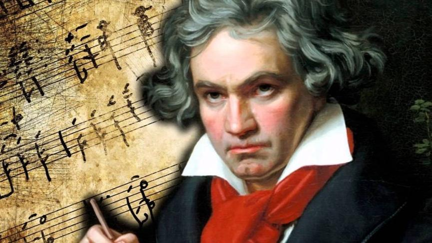

Ludwig van Beethoven 17 Aralık 1770'te doğmuş, 26 Mart 1827'de ölmüştür. Klasik
dönemden romantik döneme geçiş sürecine büyük katkı sağlamış ve gelmiş geçmiş en ünlü ve en
etkileyici bestecilerden biri olarak kabul edilen Alman piyanist ve besteci. 9 senfonisi, 5 piyano
konçertosu, 32 piyano sonatı, 16 yaylı dörtlüsü ve hayatı boyunca yazdığı tek opera olan Fidelio en çok bilinen eserlerindendir.
Almanya'nın Bonn şehrinde doğan ve çok küçük yaşlardan itibaren müziğe karşı
olan yeteneği babası ve ilk müzik öğretmeni olan Johann van Beethoven tarafından fark edilen
Beethoven daha sonra besteci ve orkestra şefi Christian Gottlob Neefe ile çalışmalarına devam etmiş,
21 yaşında Viyana'ya yerleşmiş ve orada Joseph Haydn ile çalışmış aynı zamanda virtüöz piyanist olarak
şöhret kazanmış, ölene dek Viyana'da yaşamını sürdürmüştür. Yirmili yaşlarının sonlarına geldiğinde işitme
sorunları yaşamaya başlamış ve hayatının son zamanlarında neredeyse tamamen sağır olmuştur. 1811 yılında 41
yaşında orkestra şefliğini ve halka açık konserler vermeyi bırakmış fakat beste yapmaya devam etmiştir. En çok
takdir edilen eserlerini hayatının son 15 yılında bestelemiştir.
Ludwig van Beethoven
Doğum
17 Aralık 1770 Bonn, Almanya
Ölüm
26 Mart 1827 (56 yaşında) Viyana, Avusturya
Meslekler
Piyanist, Besteci
Çalgılar
piyano
Beethoven'ın ünlü eserlerinden 5.senfoninin ilk 7 dakikasi→
